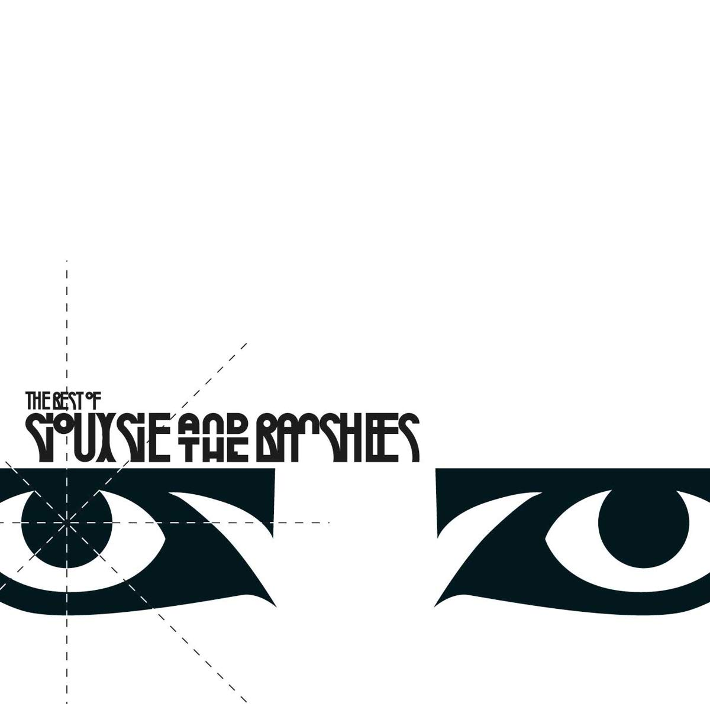
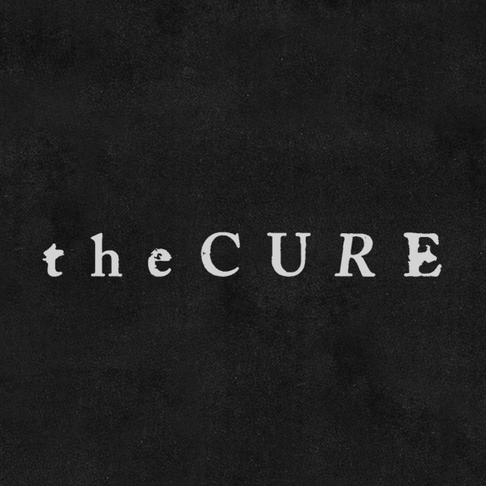

| Banda | Atividade | Origem | Integrantes | ||
|---|---|---|---|---|---|
| 1 |  |
Bauhaus | 1978-2008 | Northampton, Reino Unido | Peter Murphy, Daniel Ash, David J, Kevin Haskins. |
| 2 |  | Siouxsie and the bashees | 1976-2002 | Londres, Reino Unido | Siouxsie Sioux, Robert Smith, Sid Vicious, Steven Severin, John McGeoch, John Mackay, Kenny Morris, Budgie, Jon Klein, Marco Pirroni, Martin McCarrick, John Valentine Carruthers, Peter Fenton, Knox Chandles. |
| 3 |  | The Cure | Desde 1976 | Crawley, Reino Unido | Robert Smith; Simon Gallup; Roger O'Donnell; Jason Cooper; Reeves Gabrels; Perry Bamonte |
| 4 |  |
Legião urbana | Desde 1982 | Brasília, Distrito Federal | Renato Russo; Dado Villa-Lobos; Marcelo Bonfá; Renato Rocha |